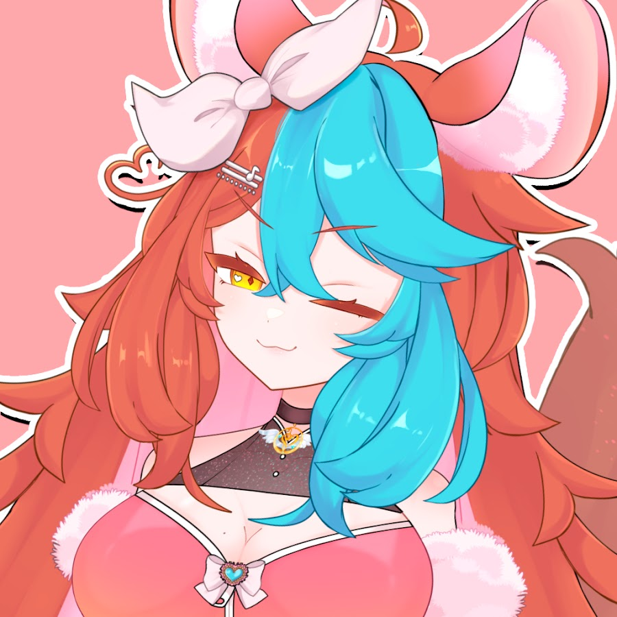
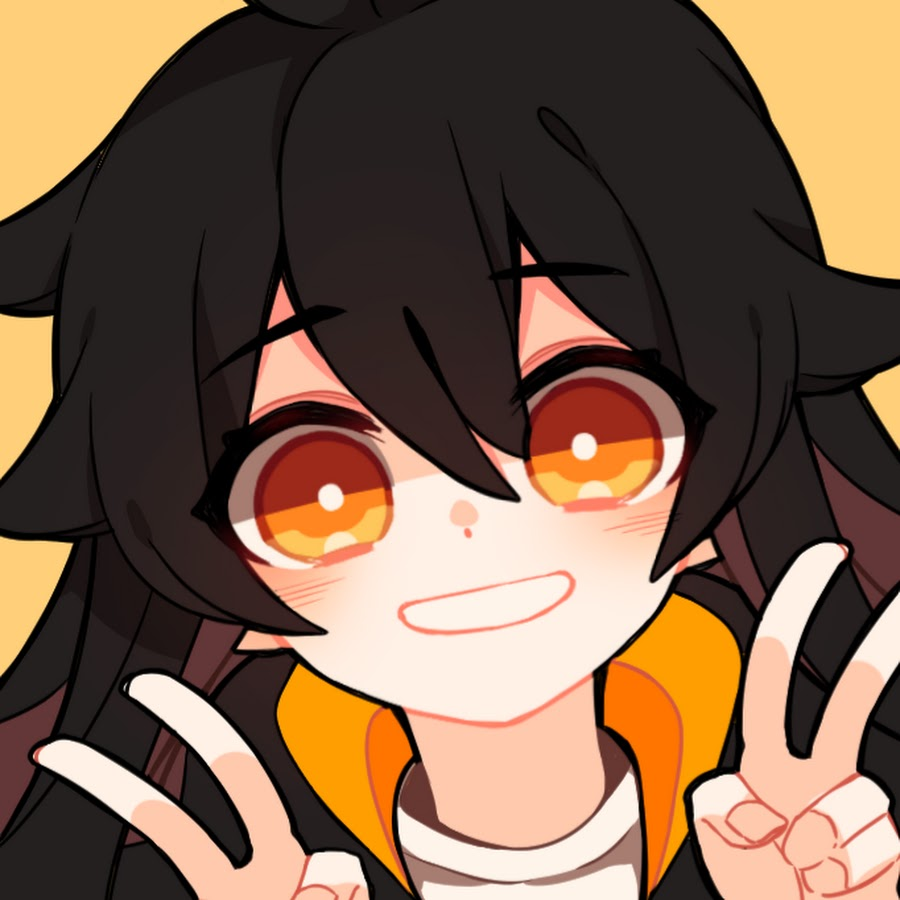
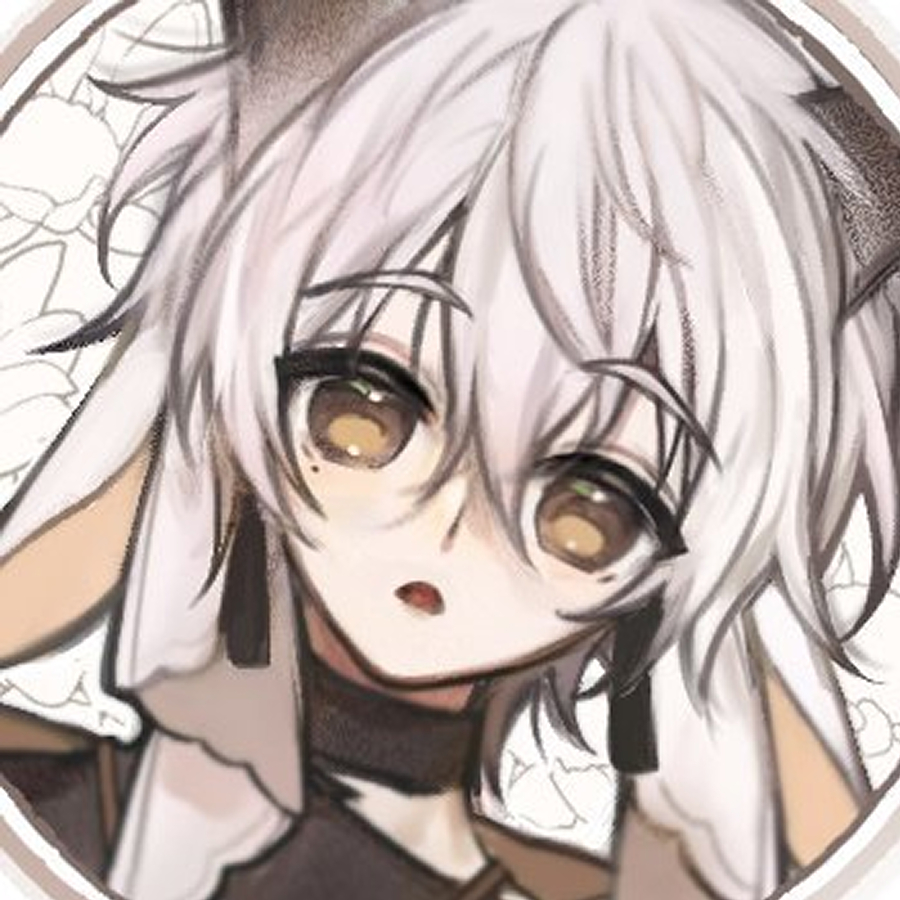
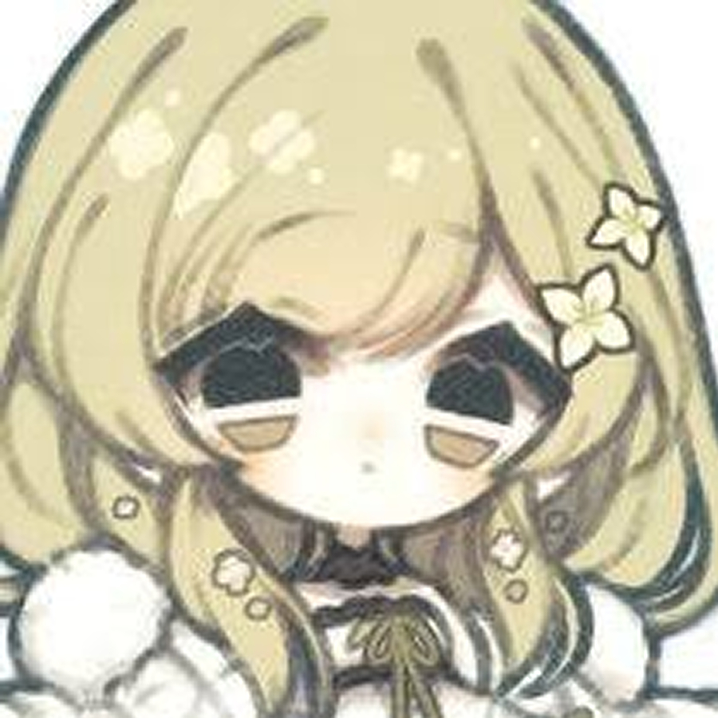
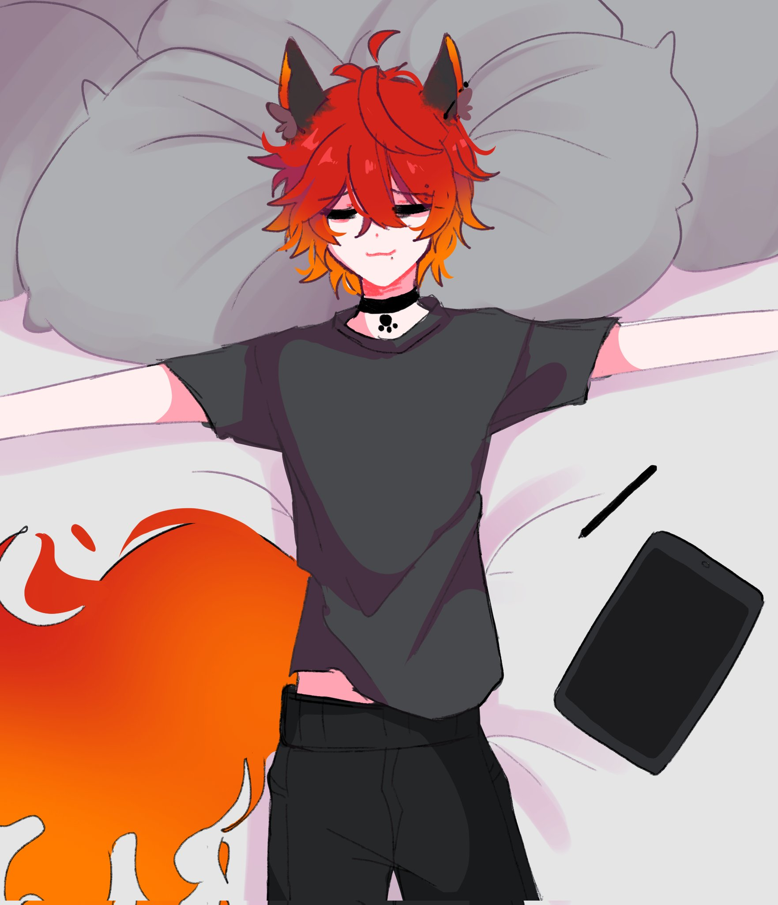
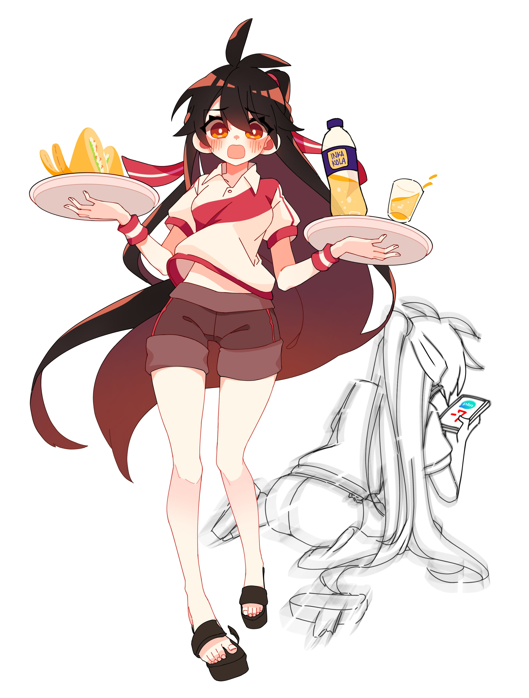
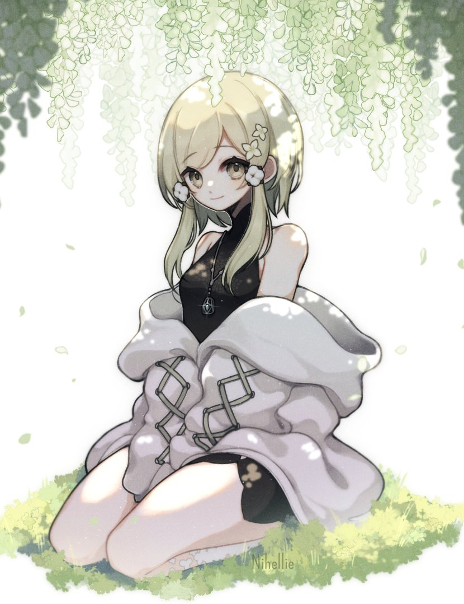

Ozzu Kiroi-Krex
Keirame Hichudokune
Lin Kaimane
Reon
Nihellie
De los primeros contactos que tuve con el mundo del internet, ya cuando tenía la conciencia suficiente de buscar cosas por mi cuenta, me encontré con Ozzu, una chica en ese entonces, que hacía covers de canciones Jpop y Jrock. Su voz literalmente me atrapó en el segundo 1, de hecho, yo pensaba que era varón. Si tuviera que definir su voz, sería ARTE. Amo su forma de transmitir y entonar las canciones. Me animó mucho a cantar en esa época y, cuando se volvió ilustradora, ¡me enamoré más! Además, siempre ha sido una persona muy tranquila pero risueña, que de alguna forma "satánica" y con una trayectoria de más de 15 años en internet nunca fue funada, eso habla muy bien de ella, más considerando el fandom de Vocaloid. Ya no estoy segura de cómo se define... nunca lo dejó claro, pero ahora su OC Krex es un chico, así que supongo que así se autopercibe. De cualquier modo, HAY ALGO QUE NO HAGA BIEN ESTE ENTE?!
Obvio que si hablo de Ozzu, tengo que hablar de Kei, o Keirame, o más completo, Keirame Hichudokune. La quiero tanto que me aprendí el apellido de su OC. Creo que es el referente de resiliencia y amor más grande que tengo. La “conocí” cuando solo hacía covers, hace fácil unos 10 años. Luego se volvió vtuber, transitó de OC y después volvió al antiguo por temas con su ex-agencia. Esta chica ha pasado por muchísimas cosas, pareciera que la vida siempre le pone trabas, pero no importa cuánto le cueste, sigue con una actitud muy positiva y amorosa, dando todo de sí, siempre priorizando a la gente que ama y dando consejos que me han sido muy útiles hasta ahora. AMO su voz y amé la relación que tuvo con Ozzu en su momento, porque sí, fueron pareja, y cada momento que las vi interactuar se notaba lo mucho que se querían. Incluso ahora, que solo son amigos, aún viven juntas y se tratan con muchísimo cariño... Sin duda es un ejemplo para mí para verle el lado bonito a la vida.
Si a alguien le debo mi estilo de dibujo y el hecho de haber aprendido a dibujar, aunque sea de manera más o menos decente, es a Lin. La conocí mucho antes de que empezara con el mundo del vtubing, cuando aún hacía directos en los que estaba en completo silencio, pero se comunicaba por el chat con nosotros. Desde entonces, siempre me ha fascinado su forma de expresarse a través del arte. Su estilo de dibujo siempre me ha parecido increíblemente bonito y se nota que tiene años de práctica y dedicación detrás. Los “bocetos” que hace, que en realidad podrían considerarse más como dibujos terminados, son tan prolijos que es difícil creer que se pueden limpiar aún más. La destreza que tiene al dibujar es admirable, y en el ámbito artístico siempre ha sido mi referente y estándar a seguir. Además de su talento, su personalidad también es algo que valoro muchísimo. Es espontánea, graciosa y tiene una forma de ser muy auténtica que me agrada mucho. La admiro no solo por su habilidad, sino también por cómo logra transmitir tanto con sus dibujos y su forma de ser en línea.
Reon es uno de esos artistas de los que, sinceramente, no sabría decir su género, pero creo que eso no tiene mucha relevancia. Lo que importa es que es una persona que, al menos hasta donde yo he visto, se comporta de una manera muy amena y tranquila en Twitter, que es su red social más activa. Es un artista increíble, y cada una de las piezas que comparte en su perfil tiene algo que, de alguna manera, me invita a reflexionar. Incluso cuando es solo un chibi de una chica china, hay algo en su trabajo que me atrapa. A veces también escribe, acompañando sus dibujos con pequeñas narrativas que son realmente adorables. Aunque ha tenido un par de desacuerdos con otra artista que también sigo, relacionados con su estilo de dibujo, creo que nadie puede negar la gran técnica que posee. Esa técnica es el resultado de muchísima práctica, que claramente expone en su perfil, mostrando sus estudios de estilo, coloreado y demás. Todo está ahí, y es imposible no admirarlo. Simplemente me encanta su enfoque artístico y es otro referente al que acudo para inspirarme.
Hace un momento mencioné que Reon había tenido algunos problemas con otra artista, ¡pues la presento! Rie o Nihellie es una artista que llevo siguiendo ya varios años. De hecho, fue la primera a la que comencé a seguir en Twitter exclusivamente por sus dibujos. Siempre me ha irradiado un aire muy tranquilo, y lo que más me agrada es que es extremadamente amable con todos sus seguidores. En alguna ocasión, la encontré en un servidor de Discord, donde ofrecía su ayuda y retroalimentación en el canal de dibujo que había allí. Es impresionante ver cómo se dedica a apoyar a otros artistas y a compartir su conocimiento. Su estilo es precioso, muy prolijo, y lo que más destaco de su trabajo es su dominio de la iluminación, que está a otro nivel. Aunque en la ilustración que vi recientemente no se note tanto, su habilidad para jugar con los colores y las sombras es increíble. Su manejo del color me parece realmente sorprendente, y es algo que siempre me ha dejado admirado. Sin duda, es una artista que no solo tiene un talento innato, sino también una dedicación y amor por lo que hace que la hacen aún más especial.
